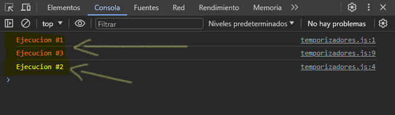

La función setTimeout()
Esta función nos pide dos parámetros: una función a ejecutarse y el tiempo en milisegundos que debemos esperar antes de que se ejecute.
Primera forma
console.log(`Ejecucion #1`)
function ejecucionDos(){
console.log(`Ejecucion #2`)
}
setTimeout(ejecucionDos, 3000)
console.log(`Ejecucion #3`)
En este ejemplo, primero hemos mostrado un mensaje en consola con el mensaje "Ejecucion #1", luego hemos definido una función con el nombre de ejecucionDos() el cual nos mostrara el mensaje de "Ejecucion #2", esta función mandaremos como parámetro a la función setTimeout(), seguido, invocamos el temporizador, mandando como parámetro la función que hemos definido, adicional de 3000 milisegundos, que es lo que se tardara en ejecutarse la función, por ultimo, mostramos un mensaje por consola con el mensaje de "Ejecucion #3".
Veamos el resultado:
Como resultado tenemos los mensajes "Ejecucion #1" y "Ejecucion #3" sombreado en anaranjado, indicando que son las primeras instrucciones en ejecutarse, a comparación de la ejecución que hemos definido con la función setTimeout(), después de haber pasado 3 segundos como lo definimos en el temporizador, hasta entonces se ejecuta la función ejecucionDos() mostrándonos el mensaje "Ejecucion #2" sombreado en amarillo.
Segunda forma función anónima
console.log(`Ejecucion #1`)
setTimeout(function () {
console.log(`Ejecucion #2`)
}, 3000)
console.log(`Ejecucion #3`)
En el mismo ejemplo, en vez de crear una función y luego mandarla como parámetro, podemos definir en setTimeout() una función anónima y ahi definir lo que queremos que se ejecute, seguido del tiempo en milisegundos que queremos que se tarde en ejecutarse.
El resultado sigue siendo el mismo.
Tercera forma función flecha
console.log(`Ejecucion #1`)
setTimeout(() => console.log(`Ejecucion #2`), 3000)
console.log(`Ejecucion #3`)
En el mismo ejemplo, al igual que el ejemplo anterior, podemos pasar como parámetro una función flecha, quedando el código mas limpio y mas corto.
El resultado es el mismo.
La función setInterval()
Como puedes ver, la función setTimeout() no es el único temporizador. La función setInterval() ejecuta una función cada cierto tiempo. Como vimos anteriormente, setTimeout() espera el numero indicado de segundos para ejecutar la función proporcionada por parámetro, y una vez ejecutada termina el temporizador.
Por otro lado, la función setInterval() espera el numero indicado de segundos y ejecuta la función proporcionada, una vez hecho, vuelve a repetir el proceso una y otra vez.
setInterval(() => {
console.log(`Teoria y practica de JavaScript`)
}, 2000);
En este ejemplo, usando la función setInterval() ejecutara el mensaje que tiene dentro y lo mostrara por consola cada 2000 milisegundos, osea, cada 2 segundos.
Detener temporizadores
Aunque no lo hemos mencionado anteriormente, tanto el temporizador setTimeout() como setInterval() devuelven un numero al ejecutarse. Este numero es un identificador único del temporizador. Es util cuando queremos detener prematuramente el temporizador y cancelar inmediatamente la ejecución del mismo.
Para poder detener un temporizador, este se guarda en una variable para poder usar la funcion clearTimeout(id) en caso que hayamos usado el temporizador setTimeout(), si no, usamos la funcion clearInterval(id) para cuando hayamos usado el temporizador setInterval().
const id = setTimeout(() => console.log(`Ejecucion ...`), 3000)
clearTimeout(id)
const id = setInterval(() => { console.log(`Teoria y practica de JavaScript`)}, 3000);
clearInterval(id)